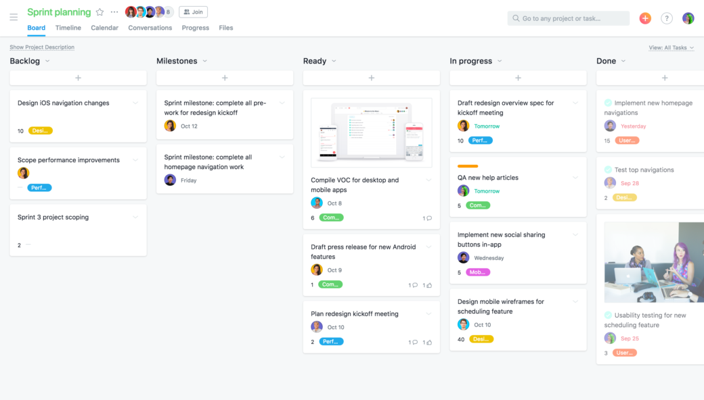
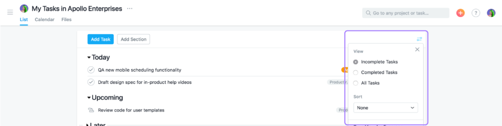

By Nikki Henderson
Oct 03, 2018
When working with people on different teams or outside of your organization, such as agencies, vendors, and contractors—you probably try to coordinate work via email. But as you go back and forth, action items and attachments quickly get buried in long email threads. Pretty soon, to-dos are pushed to the bottom of your inbox, buried in a folder, or accidentally deleted.
Many product teams have turned to sprints to manage fast, efficient production cycles—that’s the promise of them—but that’s only if they can keep everyone in sync about what work they need to tackle and how. Many product teams currently track this work in a spreadsheet where it gets outdated quickly or trapped in a tool that isn’t accessible across the team and organization.
Instead, product teams can turn to Asana’s sprint planning template. This template is designed to help you plan and manage sprints more effectively by making details like assignee, cost, priorities, and expectations clear to everyone.
Try planning your next sprint with our template, and check out our tips below to kick off and finish sprints strong.
The beginning of a sprint is an exciting time with lots of new work kicking off. But from sprint to sprint, lots of work can carry over. Without a clear way to show the stage of each sprint task (or “story” in Agile terminology), plans can look like a long, confusing to-do list with unclear or outdated task statuses.
Instead, you can use our sprint planning Kanban board template to track your sprint work by phase. The Kanban board has columns for each stage of work, so you can see where everything stands at a glance and if something is blocked.
Pro tip: As work moves forward, just drag and drop tasks between columns. You can even do this from the task by clicking the drop-down next to the project name. If you’re lucky, you might spot a Yeti…
Thoroughly tracking sprint work is standard to ensure you’re going to hit your most important goals. But if it’s not clear who is responsible for driving the work, that can slow down progress.
Pro tip: In Asana, you create tasks and assign them to the teammate responsible—right in the sprint meeting. Add a start and due date and notes about expectations in the description so it’s clear what needs to be done. Then create subtasks to track work leading up to the milestone’s achievement.
While sprint milestones represent top priorities, it can also be helpful to mark the priority of each sprint task (or “story”) and its estimated cost. Prioritizing work rallies your team around goals and keeps them focused; costing ensures they can actually fit all the work in. This also helps product teams understand where their team will and should spend their time and effort in the upcoming sprint. We all know that despite the best planning, sometimes new work pops up during a sprint. By tracking priorities right on the tasks/stories, you can shift around lower priorities or small costs to accommodate new work.
Pro tip: Our template features custom fields for priority and cost so you can easily indicate each on every task. By using custom fields, you can also create reports to make sure priorities across all your projects are on track.
Sprint planning generally happens within one team, but that doesn’t mean the work happens in a vacuum. If your team is working on a cross-functional project like a product launch, it’s likely that there are many more tasks and plans that others in your organization are working on with your team. Instead of keeping work in separate places (which risks duplication or missing it entirely),you can track tasks in multiple projects .
Pro tip: If your sprint tasks should be part of another project, or a task in another project should also be in your sprint plan project, you can easily add it without duplicating work! From your task, click the + button that appears when you hover over the project name and type in the names of any other projects you want to add it to.
Our sprint planning template can (and should) be used during a sprint kickoff meeting to create and prioritize sprint plans. You can also use it during your sprint review to see where each task ended up and move tasks to the backlog column if needed.
But did you know you can also use Asana for planning and conducting other meetings? Once a sprint planning meeting ends, there are often subsequent kickoffs to determine project plans and scope. Many meetings get derailed when they don’t have a clear agenda or way to track action items.
Instead, you can create a meeting agenda task or project to share with attendees so they can see the meeting purpose, access files, add their own questions or agenda items, and create any follow-up tasks so nobody drops the ball when the meeting is over. Using tip four above, you can also add tasks from other projects to your meeting agenda project so you can see it in each context without duplicating work.
Pro tip: Use our meeting agenda template to get started in a few clicks. Having strong kickoff meetings at the beginning of a sprint can ultimately lead to a stronger finish!
Stand up meetings are supposed to help teammates get a quick pulse on what’s happening and where you might be blocked. But unless you’re diligent about planning what to say in stand up (which wastes precious work time) it’s easy to forget or talk about non-priority information (which wastes everyone’s time).
My Tasks in Asana is a view that only shows the tasks assigned to you. You can organize and sort them however you need to hone in on your priorities for the day, major deadlines, and where you’re blocked.
Pro tip: Right before your stand up meeting, click into My Tasks to gauge your top priorities and where you might be blocked. Then switch to the completed tasks view to see work you finished so you don’t have to try and remember it yourself.
With a sprint planning template and our top tips to manage it, your team can be ready for faster-paced sprints and still finish strong. What are your favorite sprint tips?
Comments: